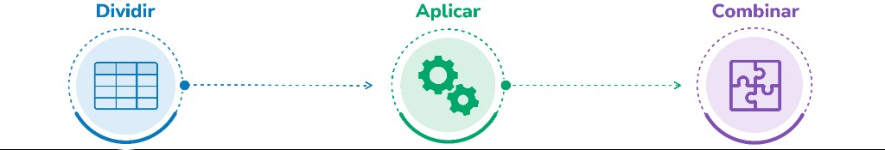

Módulo 2 | Aula 2
Introdução à Análise de Dados com Pandas
Agrupando dados: a lógica do groupby
O agrupamento é uma das operações mais utilizadas em análises na área da saúde pública. Calcular a idade média por sexo, os óbitos por causa básica ou os atendimentos por unidade de saúde são exemplos de análises que utilizam essa operação. No Pandas, esse processo segue uma lógica conhecida como Dividir-Aplicar-Combinar (Split-Apply-Combine):
Clique nos itens para saber mais

Fonte: Campus Virtual Fiocruz (2026).
Padrões de uso do groupby
Agrupamento simples
Agrupa os registros por uma variável categórica e aplica uma função agregadora a outra variável:
# Idade média dos óbitos por sexo
media_idade_sexo = sim_2019.groupby("sexo")["idade_obito"].mean()
print(media_idade_sexo)Resultado:
sexo
Feminino 71.766855
Ignorado 77.000000
Masculino 62.436345
Name: idade_obito, dtype: float64Agrupamento multidimensional
Estratifica o indicador cruzando dois ou mais níveis categóricos:
# Contagem de óbitos por dia da semana e sexo
obitos_dia_semana_sexo = (
sim_2019
.groupby(["dia_semana_obito", "sexo"])
.size()
)Resultado:
dia_semana_obito sexo
dom Feminino 5146
Masculino 5665
qua Feminino 4987
Masculino 5544
qui Feminino 5097
Masculino 5482
sab Feminino 5135
Masculino 5580
seg Feminino 5079
Masculino 5690
sex Feminino 5089
Masculino 5557
ter Feminino 5312
Masculino 5620
dtype: int64Agregações personalizadas (.agg)
Calcula várias estatísticas ao mesmo tempo. Exemplo: Quantos óbitos, qual a idade média e a idade máxima temos por município?
perfil_idade_muni = (
sim_2019
.groupby("codigo_municipio")["idade_obito"]
.agg(["count", "mean", "max"])
)
print(perfil_idade_muni.head(3))Resultado:
count mean max
codigo_municipio
330045 2348 60.391397 104.0
330170 4414 61.842546 114.0
330185 317 65.009464 94.0Outra forma de chegar aos mesmos números, mas com nomeação explícita das colunas resultantes é usando o método .agg():
resumo_custom = sim_2019.groupby("codigo_municipio").agg(
total_obitos=("idade_obito", "count"),
idade_media=("idade_obito", "mean"),
idade_maxima=("idade_obito", "max")
).reset_index()
print(resumo_custom.head(3))Resultado:
codigo_municipio total_obitos idade_media idade_maxima
0 330045 2348 60.391397 104.0
1 330170 4414 61.842546 114.0
2 330185 317 65.009464 94.0Por padrão, o groupby transforma as colunas agrupadas no novo Index da tabela resultante. Para voltar a um DataFrame padrão, em que o município continua sendo uma coluna comum, exportável para o Excel ou pronta para um merge, sempre encerre a instrução com .reset_index().